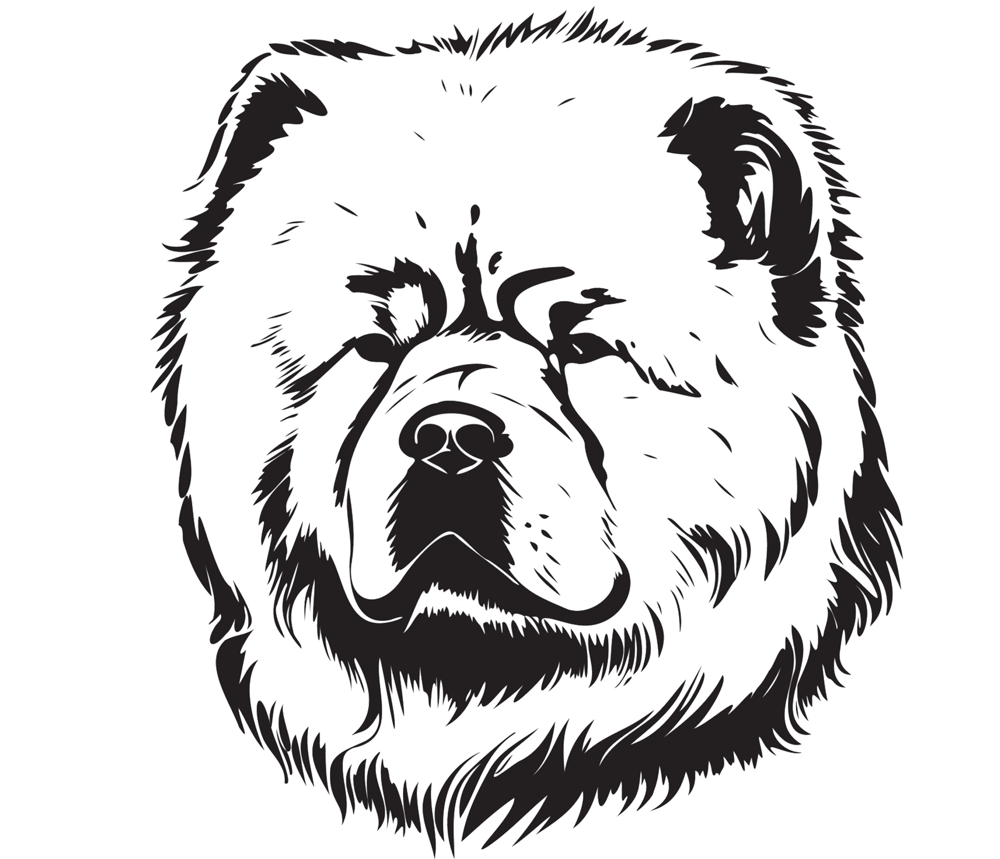

CHOWCHOW
The Chow Chow, an all-purpose dog of ancient China, presents the picture of a muscular, deep-chested aristocrat with an air of inscrutable timelessness. Dignified, serious-minded, and aloof, the Chow Chow is a breed of unique delights. Chows are powerful, compactly built dogs standing as high as 20 inches at the shoulder. Their distinctive traits include a lion's-mane ruff around the head and shoulders; a blue-black tongue; deep-set almond eyes that add to a scowling, snobbish expression; and a stiff-legged gait. Chows can have rough or smooth coats of red, black, blue, cinnamon, or cream. Owners say Chows are the cleanest of dogs: They housebreak easily, have little doggy odor, and are known to be as fastidious as cats. Well-socialized Chows are never fierce or intractable, but always refined and dignified. They are aloof with strangers and eternally loyal to loved ones. Serene and adaptable, with no special exercise needs, Chows happily take to city life.
 Chihuahua
Chihuahua Chow Chow
Chow Chow Dachshund
Dachshund Dobermann
Dobermann Sheperd
Sheperd Retriver
Retriver Husky
Husky Mastiff
Mastiff Poodle
Poodle Pomeranian
Pomeranian